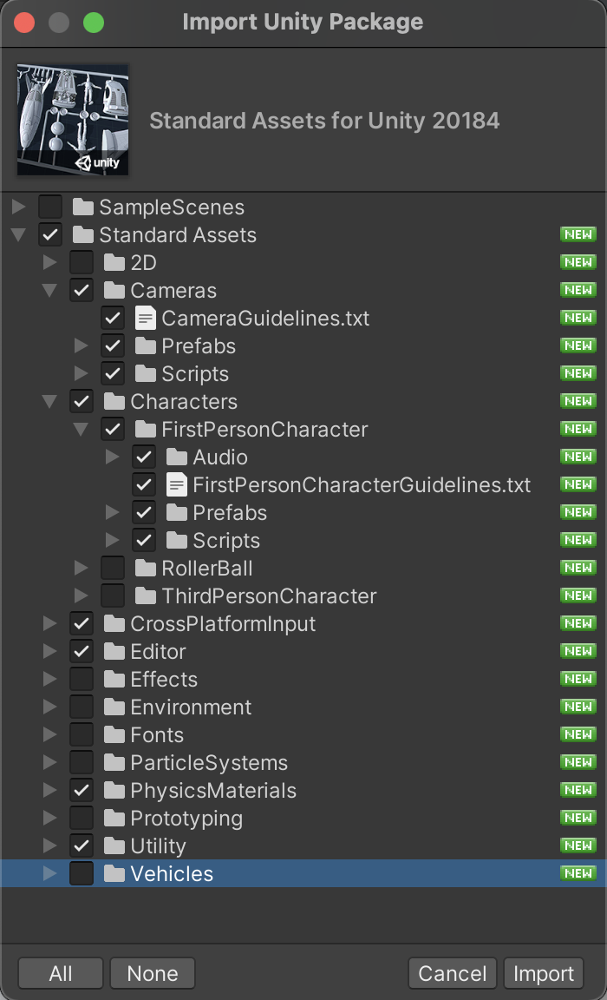

Unity: 3D Template vs URP
3D Template - 42.1 MB (Assets 7KB)
Universal Render Pipeline - 150.2 MB (Assets 18MB, ExampleAssets 17.7MB and other assets and libraries)
Unity: Skybox & Terrain Tools
Packages for today:
- Via the Asset Store: Standard Assets (we'll be using the first person controller)
- Via the Package Manager look for the Advanced tab at the top center of the Package Manager and turn on Show Preview Packages: Terrain Tools (allows us to customize the terrain object)
- Via the Asset Store: Terrain Tools Sample Asset Pack
- Via the Asset Store: Low-Poly Simple Nature Pack
Learning resources: Unity in Action, Chapter 4; Introducing the Terrain Editor, Unite Now 2020 (approximately 1 hour)
Unity: Standard Assets
When importing the Standard Assets to your project, we'll only be using the First Person Controller, so you do not need to import everything. The following will be sufficient:

NOTE: Old code error on SimpleActivatorMenu.cs - line 12 fix:
public UnityEngine.UI.Text camSwitchButton;
File naming - keywords reserved by Unity and should not be used to name folders or files: Resources, Plugins, Editor, and Gizmos.
Unity: Art Assets, Unity in Action pg 82
| 2D image |
| Flat pictures. To make a real-world analogy, 2D images are like paintings and photographs. PNG is recommended |
| 3D Model |
| 3D virtual objects (almost a synonym for mesh objects). To make a real-world analogy, 3D models are like sculptures. |
| Material |
| A packet of information that defines the surface properties of any object that the material is attached to. These surface properties can include color, shininess, and even subtle roughness. |
| Animation |
| Packets of information that define the movement of the associated object. These are detailed movement sequences created ahead of time, as opposed to code that calculates positions on the fly. |
| Particle System |
| An orderly mechanism for creating and controlling large numbers of small moving objects. Many visual effects, like fire, smoke, or spraying water, are created this way. |
Unity: Textures
Textures should be sized in powers of 2. For reasons of technical efficiency, graphics chips like to handle textures in sizes that are 2N: 4, 8, 16, 32, 64, 128, 256, 512, 1024, 2048... In your image editor (Photoshop, GIMP...), scale the downloaded image to 256 x 256, and save it as a PNG.
Textures can be part of materials, and materials are applied to geometry. material is a set of information defining the properties of a surface; that information can include a texture to display on that surface. Typically each texture goes with a different material, so for convenience Unity allows you to drop a texture onto an object and then it creates a new material automatically. That is, if you drag a texture from Project view onto an object in the scene, Unity will create a new material and apply the new material to the object.
Texture coordinates are an extra set of values for each vertex that assign polygons to areas of the texture image. Think about it like wrapping paper; the 3D model is the box being wrapped, the texture is the wrapping paper, and the texture coordinates represent where on the wrapping paper each side of the box will go. From Unity in Action: texture coordinates in appendix C.
Unity: Textures
Albedo (technical term for the base color, all the shadows and highlights have been removed)
Diffuse
Normal Map
Mask Map

What are the different texture maps for?; Secondary Maps and Detail Mask
When adjusting tiling on a game object, make sure you’re setting the tiling of the main map and not the secondary map (this material supports a secondary texture map for advanced effects). The reason for secondary maps is to allow the material to have sharp detail when viewed up close, while also having a normal level of detail when viewed from further away, without having to use a single extremely high texture map to achieve both goals.
Unity: Skybox, Unity in Action Chapter 4
New Material, Shader > Skybox > 6 Sided
A skybox is a cube surrounding the camera with pictures of the sky on each side. No matter what direction the camera is facing, it’s looking at a picture of the sky.
Select imported texture to see its properties in the Inspector, and change the Wrap Mode setting from Repeat to Clamp. Be sure to click Apply. Ordinarily, textures can be tiled repeatedly over a surface; for this to appear seamless, opposite edges of the image bleed together. But this blending of edges can create faint lines in the sky where images meet, so the Clamp setting will limit the boundaries of the texture and get rid of this blending.
Apply the new Skybox: Top Unity Menu - Window > Rendering > Lighting - select your new Skybox Material to apply it to the scene.
Toggle on or off in Effects button at top of Scene view.
Unity: Create Natural Environment by Terrain Sculpting
- In your Scene Hierarchy, Create Terrain
- With Terrain selected, in the inspector click the padlock - the lock button - this way you can focus on creating your terrain and not worry about accidentally deselecting the terrain while you are sculpting it.
- Inspector > Raise or Lower Terrain - uniform vs noisy brushes
- Modify the Stroke:
- Brush Strength - hold down A (how fast the brush works)
- Brush Size - hold down S
- Brush Spacing
- Brush Rotation - hold down D
- Steps to think about when working on a Terrain:
- Start with larger brush and larger area of Terrain
- Mountains vs flat area vs water
- Modify size and rotation as you go
- Change Brush Mask as you go to diversify the landscape
- The Terrain game object offers many brushes to work with, a few examples are:
- Brushes > Sculpt > Terrace and Terrace Controls - to create a terraced mountainscape
- Erosion tool - Wind Erosion to mimic the effect of wind
- Brushes > Sculpt > Bridge - control click two points to create a bridge from point A to point B - useful to create roads and bridges
- Set Height - sets the height of the terrain, say for example you want to add a foundation for a structure or settlement, the Set Height will level the selected area - flatten it
- Create a neighboring terrain by selecting the Neighboring Terrain tab in the terrain component. Click in the scene view to create an adjacent terrain. This expands your terrain to create a more massive world with the adjacent terrains fluidly welded to your initial terrain.
Unity: Painting Terrain Textures
Unity: Add Trees
Speed tree asset file type is .spm - the file type interacts with wind. Speed Tree Documentation; Speed Tree store and building tool
- Select the Tree Tab from the Terrain Component
- Select Add Tree, such as the Conifer Desktop model
- Configure the Brush Settings
- Pain the Trees onto the scene
- Select the Details Tab from the Terrain Component
- Select add Detail
- In the Add Grass Texture menu select one such as "GrassFron01AlbedoAlpha" texture
- Use the brush to pain Grass onto the Terrain
Unity: Water
Add Water to the Terrain
- In the Project Window locate the Assets > Standard Assets > Environment > Water > Water > Prefabs
- Add the WaterProDaytime prefab to the scene
- Position and scale the water (Water does not have physics by default, needs to be added)